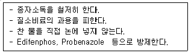
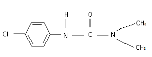
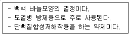

식물보호산업기사 (2012-03-04 기출문제)
1과목: 식물병리학
1. 사과나무 화상병의 전파는 주로 어떤 방법으로 이루어지는가?(오류 신고가 접수된 문제입니다. 반드시 정답과 해설을 확인하시기 바랍니다.)
- 농기구
- 흙 및 관개수
- 종자
- 곤충
(정답률: 58%)

2. 바이러스의 혈청학적 진단법과 거리가 먼 것은?
- 슬라이드법(Slide Method)
- 한천젤확산법(Agar Gel Diffusion Test)
- PCR(Polymerase Chain Reaction)
- 효소결합항체법(ELISA)
(정답률: 65%)
3. 감수체(Suscept)란 어떤 뜻인가?
- 병든 식물
- 병들기 쉬운 상태의 식물
- 기주식물
- 저항성 식물
(정답률: 90%)
4. 토마토 시들음병의 발생을 증가시키는데 상호작용하는 병원균과 선충으로 옳은 것은?
- Fusarium oxysporum f.sp.lycopersici - Meloidogyne sp.
- Verticillium albo-atrum - Praty lenchus sp.
- Pythium debaryanum - Pratylenchus sp.
- Rhizoctonia solani -Pratylenchus sp.
(정답률: 72%)
5. 다음 병원균 중 알칼리 토양에서 잘 번식하는 것은?
- 배추 무사마귀병균
- 감자 더뎅이병균
- 귀리 깜부기병균
- 벼 도열병균
(정답률: 76%)
6. 붕소의 결핍에 기인하여 발생하는 사과병은?
- 부란병
- 점무늬낙엽병
- 축과병
- 탄저병
(정답률: 89%)
7. 태풍과 침수가 일어날 때 많이 발생하는 병은?
- 벼 오갈병
- 벼 흰잎마름병
- 벼 줄무늬잎마름병
- 벼 잎집무늬마름병
(정답률: 79%)
8. 뿌리혹병(근두암종병)을 일으키는 병원균은?
- 세균
- 진균
- 바이러스
- 파이토플라스마
(정답률: 77%)
9. 다음은 어느 병의 방제법인가?

- 벼 흰잎마름병
- 벼 도열병
- 벼 오갈병
- 벼 키다리병
(정답률: 77%)
10. 큐어링에 의한 작물의 저장은 어느 병원균의 발생을 억제하기 위한 것인가?
- 고구마 위축병
- 고구마 무름병
- 고구마 더뎅이병
- 고구마 흰빛썩음병
(정답률: 83%)
11. 식물병원균이 이종기생을 하는 경우 생활환(Life Cycle)을 완성하기 위하여 기주식물을 바꾸어 생활하는 것을 무엇이라 하는가?
- 기주교대
- 기생
- 감염
- 발병
(정답률: 95%)
12. 고추에 발생하는 병으로 장마철이나 집중호우시 재배포장의 물빠짐이 불량한 경우 큰 피해를 초래하는 병은?
- 고추 역병
- 고추 흰가루병
- 고추 잘록병
- 고추 검은무늬병
(정답률: 86%)
13. 균류의 유성포자는 성질이 다른 2개의 핵의 융합과 분열에 의하여 만들어지며 유전적 변이의 원인이 되는데, 다음 중 유성포자에 속하지 않는 것은?
- 난포자
- 유주자
- 접합포자
- 자낭포자
(정답률: 72%)
14. 잣나무에 발생하는 병으로 병든 가지 또는 줄기의 수피는 노란색 내지 갈색으로 변하며 거칠어지고 수지(Resin)가 흐르며, 송이풀류와 까치밥나무를 중간기주로 갖는 병은?
- 잣나무 털녹병
- 잣나무 잎떨림병
- 잣나무 수지동고병
- 잣나무 흑병
(정답률: 94%)
15. 균핵(菌核)에 관한 설명으로 옳은 것은?
- 세균이 주로 형성한다.
- 부적당한 환경하에서 쉽게 죽는다.
- 균사조직으로 이루어져 있다.
- 기주로부터 쉽게 분리되지 않는다.
(정답률: 86%)
16. 수목병의 원인을 생물적·비생물적을 구분할 때 생물적 원인에 의한 병원이 아닌 것은?
- 흰가루병
- 불마름병
- 양분의 불균형
- 겨우살이
(정답률: 85%)
17. 소나무 혹병의 하포자와 동포자는 어디서 월동하는가?
- 졸참나무
- 향나무
- 참 취
- 야생까치밥나무
(정답률: 84%)
18. 다음 중 스파이로플라스마에 대한 특징으로 틀린 것은?
- 단위막으로 둘러싸여 있다.
- 진정한 세포벽을 가지고 있지 않다.
- 아직까지 인공배지에서 배양이 불가능하다.
- 식물 꽃이나 식물표면 등에 착생하거나 내부에 부생하여 생활한다.
(정답률: 66%)
19. 곰팡이의 기관을 영양체와 번식체로 구분할 때 영양체가 아닌 것은?
- 균사
- 균핵
- 자좌
- 자낭포자
(정답률: 76%)
20. 다음 식물병원균 중 순활물기생하는 균은?
- 벼 도열병균
- 벼 키다리병균
- 밀 흰가루병균
- 벼 깨씨무늬병균
(정답률: 73%)
2과목: 농림해충학
21. 건축물의 목재(예:기둥, 문틀 등), 목가공품의 표면만 남기고 내부를 불규칙하게 식해한 후 표면에 구멍을 뚫고 성충이 고운 가루를 배출하며 탈출하는 해충이 있다. 다음 중 어떤 해충인가?
- 흰점박이바구미
- 가루나무좀
- 노랑무늬솔바구미
- 노랑애나무좀
(정답률: 86%)
22. 외국에서 새로운 해충이 우리나라에 침입해서 문제가 된 경우가 많다. 다음 중 침입해충으로만 구성된 것은?
- 벼물바구미, 소나무재선충, 밤나무혹벌, 미국흰불나방
- 미국흰불나방, 버즘나무방패벌레, 독나방, 밤나무혹벌
- 밤나무혹벌, 소나무좀, 미국흰불나방, 벼물바구미
- 벼물바구미, 밤나무혹벌, 버즘나무방패벌레, 독나방
(정답률: 70%)
23. 솔잎혹파리를 비롯한 혹파리과(科) 곤충의 형태적 특징으로 맞는 것은?
- 정상적인 날개가 2쌍이다.
- 앞날개만 있고 뒷날개는 퇴화되었다.
- 앞날개가 뒷날개보다 크며 가는 털로 덮여 있다.
- 앞날개는 각질화되어 있으며 날개맥이 없다.
(정답률: 75%)
24. 곤충목의 분류에서 개미가 속하는 목(目)은?
- 벌목
- 노린재목
- 흰개미목
- 흰개미붙이목
(정답률: 83%)
25. 벼를 가해하는 해충 중 집중분포성이 가장 큰 것은?
- 벼멸구
- 흰등멸구
- 애멸구
- 끝동매미충
(정답률: 76%)
26. 수정된 알세포에서 부화하기까지 발육을 무엇이라고 하는가?
- 배자발생
- 후배자발육
- 유충생장
- 성충우화
(정답률: 60%)
27. 곤충이 생존하기 불리한 환경이 되면 대사와 발육이 느리게 진행되고 환경이 좋아지면 즉각 정상상태를 회복하는 현상은?
- 분산
- 휴지
- 휴면
- 일장
(정답률: 83%)
28. 소나무류에 피해를 주는 솔잎혹파리의 천적이 아닌 것은?
- 솔잎혹파리먹좀벌
- 검정무늬납작맵시벌
- 혹파리반뿔먹좀벌
- 혹파리살이먹좀벌
(정답률: 84%)
29. 날개가 있는 것은 날개맥이 없는 가늘고 긴 날개를 가지고 있으며 그 가장자리에 긴 털이 규칙적으로 나 있으며, 좌우대칭이 아닌 입틀을 가지고 있는 곤충군은?
- 총채벌레목
- 나비목
- 노린재목
- 매미목
(정답률: 83%)
30. 다음 중 알라타체에 대한 설명으로 가장 옳은 것은?
- 곤충의 소화기관으로 배설작용에 관여한다.
- 변태조절 호르몬을 분비한다.
- 뒷가슴에 있는 내분비샘이다.
- 작용은 명백하지 않다.
(정답률: 84%)
31. 사과웅애에 대한 설명으로 틀린 것은?
- 성충으로 나무껍질 밑에서 월동한다.
- 부화 직후의 유충은 다리가 3쌍이다.
- 대발생했을 때에는 실을 토하며 바람에 날려 이동하는 것을 볼 수 있다.
- 가해를 받으면 사과 잎에 백색 점이 생기며, 심하면 변색되고 말라 죽는다.
(정답률: 55%)
32. 다음 해충의 방제수단으로 이용되는 내충성품종에 대해 고려해야 할 조건들 중 부적당한 것은?
- 해충의 생활에 유해할 것
- 해충의 산란 및 먹이로서 적당하지 않을 것
- 해충이 가해할 때 견디어 내는 능력이 클 것
- 작물의 성숙기와 해충의 발생시기가 일치할 것
(정답률: 84%)
33. 다음 곤충 개체 간의 통신수단에 사용되는 물질들 중 관계가 없는 것은?
- Pheromone
- Allomone
- Hormone
- Kairromone
(정답률: 81%)
34. 애벌레가 3회 탈피한 후 4회 탈피 전까지를 몇 령층이라고 하는가?
- 1령층
- 2령층
- 3령층
- 4령층
(정답률: 74%)
35. 내충성이 강한 품종을 선택하는 것은 다음 중 어는 방제법에 속하는가?
- 물리적 방제법
- 화학적 방제법
- 생물적 방제법
- 재배학적 방제법
(정답률: 75%)
36. 국내에서는 1988년에 처음 발견된 외래 해충으로 벼 재배시 성충은 벼잎을 유충은 벼뿌리를 가해하여 피해를 주는 해충은?
- 벼멸구
- 애멸구
- 끝동매미충
- 벼물바구미
(정답률: 73%)
37. 다음 중 거세미나방의 월동 형태는?
- 알
- 유충
- 번데기
- 성충
(정답률: 76%)
38. 곤충의 호흡계와 소화계에 대한 설명으로 틀린 것은?
- 음식물이 주로 소화되는 곳은 중장이다
- 호흡계는 기문, 기관, 모세기관으로 구성된다.
- 기관의 내부는 나선사로 되어 있어 찌그러짐을 방지한다.
- 중장과 후장의 내벽은 표피로 덮여 있어서 탈피할 때마다 새로운 표피로 대체된다.
(정답률: 80%)
39. 탈피과정에서 다시 흡수되어 재활용되는 체벽의 부분은?
- 내원표피
- 외원표피
- 상표피
- 기저막
(정답률: 83%)
40. 다음 해충 중 성충의 피해가 문제되는 것은?
- 소나무좀
- 뽕나무하늘소
- 밤나무순혹벌
- 솔나방
(정답률: 56%)
3과목: 농약학
41. 다음 중 유제의 성질이 아닌 것은?
- 농약 원제가 용제에 녹는다.
- 농약 원제가 물에 녹는다.
- 농약 원제가 지용성이다.
- 계면활성제가 첨가된다.
(정답률: 79%)
42. 다음 농약 중 합성피레스로이드계 살충제는?
- 아바멕틴 유제
- 벤설탑 수화제
- 카탑하이드로클로라이드 수용제
- 델타메트린 유제
(정답률: 48%)
43. 가지과 작물(고추, 토마토)의 선택성 제초제는?
- 나프로파마이드 유제
- 시마진 수화제
- 리뉴론 수화제
- 메타벤즈티아주론 수화제
(정답률: 48%)
44. 다음 중 농약의 주성분에 의한 분류로 주로 제초제나 생장조정제로 이용되고 있는 농약은?
- 유기비소계
- 피레스로이드계
- 유황계
- 폐녹시계
(정답률: 72%)
45. 유제용 기계유가 갖추어야 할 물리적인 성질은?
- 습윤성(濕潤性)
- 부착성(附着性)
- 설폰가(Sulfon價)
- O/W 형
(정답률: 54%)
46. 농약 보조제로 사용되는 계면활성제의 성질에 대한 설명으로 옳지 않은 것은?
- 유화력(乳化力)이나 분산력(分散力)이 커야 한다.
- 농약의 주제를 변질시켜서는 안된다.
- 연수(軟水)에만 쓰일수 있어야 한다.
- 주제 및 기타 보조제와 친화성(親化性)을 지녀야 한다.
(정답률: 88%)
47. 다음 구조식을 가진 제초제는 어느 계에 속하는가?

- 페녹시초산계 제초제
- 카바메이트계 제초제
- 요소계 제초제
- 트리아진계 제초제
(정답률: 66%)
48. 농약의 제형에서 입제와 세립제의 가장 큰 차이점은?
- 유효성분
- 입자크기
- 사용방법
- 제조방법
(정답률: 86%)
49. Mancozeb에 대한 설명으로 옳은 것은?
- 유기유황계 살균제이다.
- 고독성 농약이다.
- 알칼리 약제와 혼용이 가능하다.
- 수도용 약제이다.
(정답률: 74%)
50. 살비제 농약의 구비조건으로 적당하지 않은 것은?
- 응애류는 발생기간이 짧으므로 잔효성이 짧을 것
- 응애류에 대한 적용범위가 넓을 것
- 저항성 응애류에 대해서 효과가 좋을 것
- 응애류에만 선택적 효과가 있을 것
(정답률: 76%)
51. 파라티온(Parathion)은 어느 효소 작용을 억제하는가?
- 아밀라아제
- 셀롤라이제
- 콜린에스테라제
- 모노아미노옥시다제
(정답률: 73%)
52. 곤충 생장조절제로 개발되었으며 소나무의 솔껍질깍지벌레의 방제에 효과적인 약제는?
- Buprofezin
- Pencycuron
- Thiophanate-methyl
- Cymoxanil
(정답률: 58%)
53. 다음 [보기]에서 설명하는 살균제는?

- 가스가마이신(Kasugamycin)
- 메틸브로마이드(Methyl Bromide)
- 티람(Thiram)
- 클로로타로닐(Chlorothalonil)
(정답률: 74%)
54. DEP제(디프테릭스)가 분해하여 1차로 변하는 형태는?
- Parathion
- DDVP
- Trithion
- Dimethoate
(정답률: 83%)
55. 농약 혼용의 장점이 아닌 것은?
- 방제 비용이 절감된다.
- 서로 다른 병해충을 동시에 방제가 가능하다.
- 혼용가능 농약은 혼합 후 바로 사용하지 않아도 좋다.
- 같은 약제 연용에 의한 내성의 억제효과가 있다.
(정답률: 90%)
56. 다음 제초제 중 잡초와 작물 모두를 살멸시키는 비선택성 식물전멸약은?
- 디캄바(Dicamba)
- 프레티(Pretilachlor)
- 근사미(Glyphosate)
- 펜디(Pendimethalin)
(정답률: 72%)
57. 쥐가 먹었을 때 위산에 의하여 독극의 가스가 발생하여 살서력을 발휘하는 무기계통의 살서제는?
- 와르파린
- 무리탄
- 인화아연
- 토모린
(정답률: 73%)
58. 침투성 살균제의 특성에 대한 설명 중 틀린 것은?
- 대개 직접살균제이다.
- 특정 병원균에 대해서 살균력이 높이 나타나는 특성을 나타낸다.
- 발병 후 발생된 균사체에 대하여도 살균력을 나타낸다.
- 계속적으로 사용하여도 병원균에 의한 저항성 유발정도가 낮다.
(정답률: 81%)
59. 세빈 25% 유제(비중: 1.0) 100mL를 희석하여 0.⑤%의 살포액을 만들고자 한다. 이 때 소요되는 물의 양은 몇 L인가?
- 39.9
- 49.9
- 59.9
- 69.9
(정답률: 84%)
60. 다음 약제 중 응애의 알, 어린 벌레, 성충에 대해서 고루 살충효과가 큰 약제는?
- 디코폴(Dicofol)
- 이피엔(EPN)
- 테라라디?(Tedion)
- 다이아지논(Diazinon)
(정답률: 64%)
4과목: 잡초방제학
61. 다음 중 제초제 그라목손(파라코액제)에 대한 설명 중 옳지 않은 것은?
- 토양에 떨어지면 곧바로 토양에 흡착되므로 살포 직후 작물을 파종할 수 있다.
- 식물의 광합성작용을 방해하여 잡초를 죽인다.
- 잡초의 생육기에 처리하는 비선택성 제초제이다.
- 잎에 살포하면 뿌리에 빨리 이행하므로 다년생 잡초의 방제에 효과가 높다.
(정답률: 49%)
62. 잡초 방제의 경제성 분석 중 다양한 잡초 발생밀도 하에서 농작물의 소득을 분석하는 방법은?
- 부분예산 분석법
- 기계/동력예산 분석법
- 한계점 분석법
- 보상력 분석법
(정답률: 64%)
63. King의 잡초발아 5단계설 중 다섯 번째 단계는?
- 이유기
- 유아출현기
- 세포분열 및 신장기
- 종근 및 유아신장기
(정답률: 56%)
64. 식물 간의 상호작용에는 여러 종류가 있다. 생리적으로 서로 공유하는 경우에는 기생과 공생이 있고, 생리적으로 서로 공유하지 않는 경우에는 경합, 편리작용, 편해작용, 원협작용 등이 있다. 다음 중 기생에 해당되는 것은?
- 콩밭 잡초 새삼
- 콩의 뿌리혹박테리아
- 나무껍질에 붙어있는 지의류
- 목초지에서 두과와 화본과 식물
(정답률: 77%)
65. 콩밭의 바랭이를 방제하는 데 적합하지 못한 것은?
- 멀칭재배를 한다.
- 이랑 및 포기 사이의 간격을 넓게 해 콩을 심는다.
- 바랭이에 효과가 있는 제초제를 처리한다.
- 밀도를 조밀하게 콩을 심어 재배한다.
(정답률: 77%)
66. 제초제를 연용하여도 저항성 잡초의 발현사례가 적은 이유가 아닌 것은?
- 제초제 약효 지속성이 짧음
- 잡초의 생식 및 번식빈도가 1년에 수회 반복
- 토양에 많은 양의 감수성 잡초종자 함유
- 감수성 잡초보다 저항성 잡초계통의 고정율이 낮음
(정답률: 73%)
67. 주로 종자에 의하여 번식되는 잡초는?
- 올미
- 가래
- 너도방동사니
- 피
(정답률: 70%)
68. 다음 중 화곡류(禾穀類)의 어는 시기에 2, 4-D를 처리할 때 피해가 가장 큰가?
- 발아기
- 분열기
- 개화기 전후
- 수확기
(정답률: 60%)
69. 잡초에 대한 작물의 경합력을 높이는 방법은?
- 직파재배를 한다.
- 이앙·이식재배를 한다.
- 무비재배를 한다.
- 무경운재배를 한다.
(정답률: 88%)
70. 다음 중 우리나라 축산 사료용 옥수수 재배포장에 대량 발생되어 문제가 되고 있는 외래잡초는?
- 바랭이(Digitaria ciliaris)
- 쇠비름(Potulaca olaeracea)
- 어저귀(Abutilon theophrasti)
- 여뀌(Persicaria hydropiper)
(정답률: 60%)
71. 다년생의 영양번식기관이 아닌 것은?
- 덩이줄기
- 뿌리줄기
- 비늘줄기
- 절간
(정답률: 78%)
72. 종자 발아에 영향을 미치는 3대 환경요인이 아닌 것은?
- 광(光)
- 산소(酸素)
- 온도(溫度)
- 토양산도(pH)
(정답률: 82%)
73. 잡초의 생물학적 방제에 있어서 방제용으로 도입되는 생물(천적)이 구비하여야 할 조건 중 맞지 않는 것은?
- 대상 이외의 식물에 대하여도 서식을 하여 소멸하지 않아야 한다.
- 환경에 잘 적응하며, 잡초의 적응지역에 적응할 수 있어야 한다.
- 비산 또는 분산하는 능력이 크고 숙주인 잡초에 잘 이동해야 한다.
- 인공적으로 배양 또는 증식이 용이하며 생식력이 강해야 한다.
(정답률: 87%)
74. 효과적인 잡초 방제를 위해서는 재배작물은 물론 발생되는 잡초의 종류와 환경적인 조건을 파악하여야 한다. 다음 비농경지 잡초 방제시 비농경지가 구비하고 있는 특성 중 옳지 않은 것은?
- 경운 및 정지작업이 이루어지지 않기 때문에 발생하는 잡초의 종류가 단순하다.
- 잡초의 발생시기가 일정하지 않고 계속적으로 연장된다.
- 지표면이 항상 잡초의 발아에 유리한 상태이다.
- 후작의 염려가 없기 때문에 잔효기간이 긴 제초제를 처리하는 것이 바람직하다.
(정답률: 72%)
75. 잡초의 발아습성 중 발아기회성은 어떤 특성을 뜻하는가?
- 일장에 감응하여 발아하게 되는 특성
- 오랜 기간에 걸쳐 지속적으로 발아하게 되는 특성
- 일정한 간격을 가지고 최고의 발아율을 나타내는 특성
- 온도조건에 감응하여 발아하게 되는 특성
(정답률: 50%)
76. 잡초를 방제하지 않았을 경우 발생된 잡초가 작물에 직접 피해를 주는 가장 큰 요인은?
- 환경악화
- 혼입부착
- 병해충매개
- 경합
(정답률: 81%)
77. 예방적 방제수단에 해당하지 않는 것은?
- 작물종자의 정선
- 중경제초
- 비산종자의 관리
- 농기계의 청소
(정답률: 77%)
78. 밭에서 발생하는 초우점 화본과 잡초는?
- 나도겨풀
- 바랭이
- 메귀리
- 강아지풀
(정답률: 76%)
79. 잡초를 형태학적으로 분류할 때 관계없는 것은?
- 화본과 잡초
- 초본류
- 광엽 잡초
- 방동사니과 잡초
(정답률: 85%)
80. 잡초는 해롭기만 한 것이 아니라 유용성도 있다. 다음 중 잡초의 유용성으로 적당하지 않은 것은?
- 토양에 유기물을 공급해 준다.
- 병해충의 서식처가 된다.
- 토양 유실을 방지해 준다.
- 작물개량을 위한 유전자 자원으로 활용될 수 있다.
(정답률: 85%)